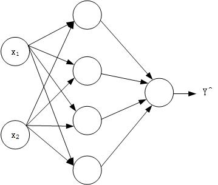
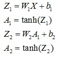
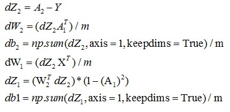
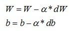

浅层神经网络理论学习已经被拿下了，现在把编程作业自己实现一下
本次需要实现的浅层神经网络结构如下

模型
整个神经网络结构实现的过程跟深度学习实践01-Logistic Regression识别包含猫的图片类似，不过增加了计算量而已。主要流程如下：
- 初始化参数
W1、b1、W2和b2 - 根据
W1、b1、W2、b2以及输入X求得输出Z1、Z2、A1、A2 - 根据输入
X和输出Z1、Z2、A1、A2求得梯度下降量dW1、db1``dW2和db2 - 使用
dW1、db1``dW2和db2来更新W1、b1、W2和b2 - 循环
2-5直至满足学习终止条件，如迭代300次。
算法实现
假定训练集输入为X，训练集结果为Y
在实现流程之前依然是加载使用到的python库
1 | import numpy as np |
初始化参数W和b
这一步与逻辑回归有所不同的是，我们需要根据神经网络的结构来初始化不同维度的W1和W2；其次，我们需要随机的初始化W1和W2，为什么呢？假设W1和W2都是初始化为全0矩阵，那么第一层的所有神经单元做的工作都是相同的，计算出来的是同一个值，类似的，当第二次迭代的时候每一层的不同神经单元计算也是相同的，这样的话神经单元的个数就没有什么意义了。并且，W初始化的值不能太大，以sigmoid激活函数为例子，如果W值较大，那么最终计算出来的Y^数值也会比较大，在点(Y^, sidmoid(Y^))处的斜率接近于0，根据梯度下降法的特性，整个神经网络刚开始的学习速度就会大大降低，不利于提高效率。因此初始化的代码更改如下：
1 | def initial(n_x, n_h, n_y): |
根据W、b、输入X求得输出A和Z
根据前向公式计算输出A和Z

前向公式
两个激活函数已经在math以及numpy中实现了，直接调用即可。前向传播函数实现如下：
1 | def forward(parameters, X): |
根据X、Y和A求dW和db
根据反向传播公式

反向公式
求出dW和db
1 | def backward(X, Y, cache, parameters): |
使用dW和db来更新W、b
根据公式更新参数W和b

更新参数
1 | def update_parameters(parameters, grads, learning_rate=1.2): |
浅层神经网络的建立
1 | def nn_model(X, Y, iteration_times): |
经过大量学习过程，我们习得了模型中的参数W和b。
结果
使用这个神经网络对包含“猫”的图片进行识别，经过2500次的迭代学习，最终这个深层的神经网络训练集识别率为98.5%，而测试集相比于之前的逻辑回归的72%得到了提升，准确率为80%
至此，吴恩达老师的深度学习五门课的第一门课“深度学习初步以及构建神经网络”已经全部完成。

![微信分享二维码]()